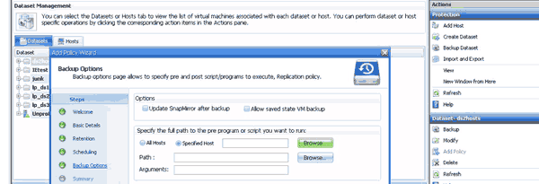

ドキュメントの変更をリクエスト
ドキュメントの変更をリクエスト GitHub で編集
GitHub で編集 寄稿者向けガイド
寄稿者向けガイドデータセットにポリシーを追加するための要件
バックアップまたはリストア機能用にデータセットにポリシーを適用するには、特定の要件を満たす必要があります。保持、スケジュール、レプリケーションの各ポリシーを同じデータセットに複数追加することができます。
ポリシー名と概要
ポリシー名と概要 。使用できる文字は次のとおりです。
-
a ~ z
-
A ~ Z
-
0～9
-
_（アンダースコア） *
-
（ハイフン）
-
バックアップ保持の上限
毎時、毎日、毎週、または毎月のバックアップコピーを削除するまでの最低期間を決定する必要があります。

|
保存タイプが「無制限」のバックアップは削除されません。 |
バックアップは、時間または指定した数に基づいて保持できます。たとえば、最新のバックアップを10個保持したり、15日を超過した古いバックアップを削除したりできます。
古いバックアップを保持しているように見える場合は、保持ポリシーを確認してください。Snapshotコピーを共有するバックアップ対象のすべてのオブジェクトが、保持ポリシーによるSnapshotコピーの削除を実行するためのバックアップ削除条件を満たしている必要があります。
スケジュールされたバックアップジョブの名前
スケジュール設定されたバックアップジョブに名前を割り当てる必要があります。
バックアップをスケジュールする権限
データセットのバックアップをスケジュールするには、適切なクレデンシャルが必要です。
同時にバックアップがスケジュールされている可能性があるデータセットの数
同じ仮想マシンが異なるデータセットに属している場合は、同じVMを含む複数のデータセットのバックアップを同時にスケジュールしないでください。この場合、いずれかのバックアップ処理が失敗します。1つのホストで同時に実行できるバックアップ処理は1つだけです。
スケジュールされたバックアップのタイプ
アプリケーションと整合性のあるバックアップとcrash-consistentバックアップのどちらでも実行できます。
バックアップオプション
バックアップ完了後にSnapMirrorデスティネーションの場所を更新するかどうかを選択する必要があります。
更新が成功するのは、SnapMirrorが設定済みで、データセット内の仮想マシンを含むLUNがソースSnapMirrorボリュームに属している場合のみです。
Hyper-V用SnapManager のデフォルトの動作では、1つ以上の仮想マシンをオンラインバックアップできない場合、バックアップは失敗します。仮想マシンが保存された状態にあるか、シャットダウンされている場合は、オンラインバックアップを実行できません。状況によっては、仮想マシンが保存された状態にあるか、メンテナンスのためにシャットダウンされている場合もありますが、オンラインバックアップができない場合でも、バックアップを続行する必要があります。これを行うには、保存された状態の仮想マシンを移動するか、保存された状態のバックアップを許可するポリシーが設定された別のデータセットにシャットダウンします。
Allow Saved state VM backupチェックボックスSnapManager をオンにして、Hyper-Vが保存された状態の仮想マシンをバックアップできるようにすることもできます。このオプションを選択した場合、Hyper-V VSSライターが保存された状態の仮想マシンをバックアップしたり、仮想マシンのオフラインバックアップを実行したりしても、SnapManager for Hyper-Vはバックアップを失敗させません。保存された状態またはオフラインのバックアップを実行すると、原因 のダウンタイムが発生する可能性があります
分散型のアプリケーションと整合性のあるバックアップ機能を使用すると、バックアップノードから作成された単一のハードウェアSnapshotコピーで、パートナークラスタノードで実行されている複数のVMの整合性を確保できます。この機能は、Windowsフェイルオーバークラスタの複数のノードにまたがるCSV 2.0 Windowsボリュームで実行されているすべてのVMでサポートされます。この機能を使用するには、アプリケーションと整合性のあるバックアップ・タイプを選択し、*分散バックアップを有効にする*チェック・ボックスを選択します。
SnapMirrorバックアップのセカンダリストレージ
これらのオプションを使用すると、SnapMirror関係に定義されているセカンダリストレージに適用可能なオプションを指定できます。ここでは、* Update SnapMirror after backup *を選択できます。[ボールトラベルオプション（Vault label option）]パネルで、[バックアップ後にSnapVault を更新（Update after backup）]を選択できます。*バックアップ後にSnapVault を更新*を選択した場合は、ドロップダウンメニューからボルトラベルを選択するか、カスタムラベルを入力する必要があります。
バックアップスクリプト
オプションのバックアップスクリプトをバックアップの前後に実行するかどうかを決定する必要があります。
これらのスクリプトは、特定のサーバを指定しないかぎり、すべてのデータセットメンバーホスト上で実行されます。
バックアップスクリプトは、データセット内の各ノードで実行されます。データセットポリシーを設定して、スクリプトを実行するホストの名前を指定できます。ポリシーは、バックアップ対象のVMが実行されているクラスタ内の各ノードで処理されます。

バックアップのポストスクリプトの引数では、次の環境変数を使用できます。
-
*$VMSnapshot *：このバックアップの結果としてストレージ・システム上に作成されるSnapshotコピーの名前を指定します。7-Modeで実行されているONTAP 環境でアプリケーションと整合性のあるバックアップを実行する場合は、2つ目の（バックアップ）Snapshotコピーの名前を指定します。1つ目の名前は2つ目の名前と同じですが、_backupサフィックスは付加されません。
-
*$SnapInfoName *：SnapInfoディレクトリ名で使用されるタイムスタンプを指定します。
-
*$SnapInfoSnapshot *：ストレージシステムに作成されたSnapInfo Snapshotコピーの名前を指定します。SnapManager for Hyper-Vは、データセットバックアップ処理の終了時にSnapInfo LUNのSnapshotコピーを作成します。
$SnapInfoSnapshot変数は、専用仮想マシンでのみサポートされます。 -
関連情報 *